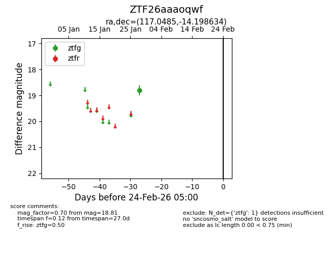
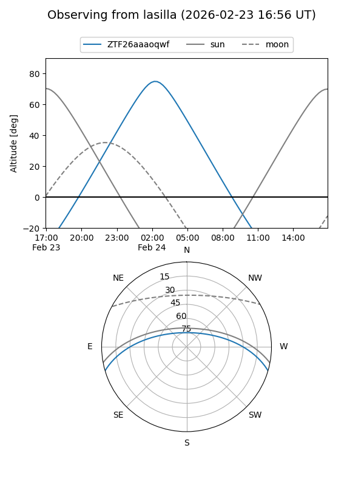
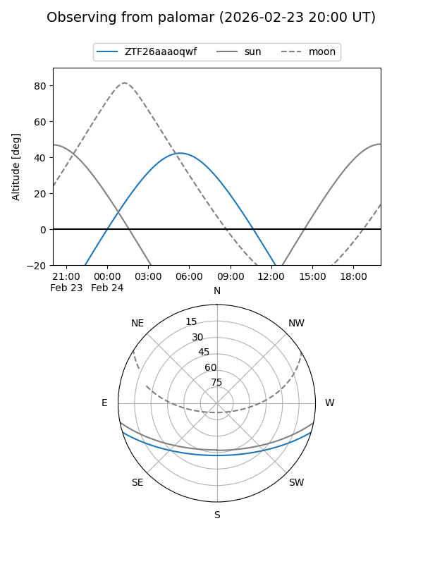

ZTF26aaaoqwf
Target ZTF26aaaoqwf at 2026-01-28 05:56
Aliases and brokers:
FINK: link
Lasair: link
ALeRCE: link
alt names
ZTF26aaaoqwf (ztf,fink_ztf)
Coordinates:
equatorial (ra, dec) = 117.0485,-14.19863
equatorial (HMS+DMS) = 07:48:11.63,-14:11:55.08
galactic (l, b) = (232.0970,+5.71872)
Flags:
Photometry:
last ztfg=18.81
1 ztfg detections
Lightcurve

Visibility


Additional plots